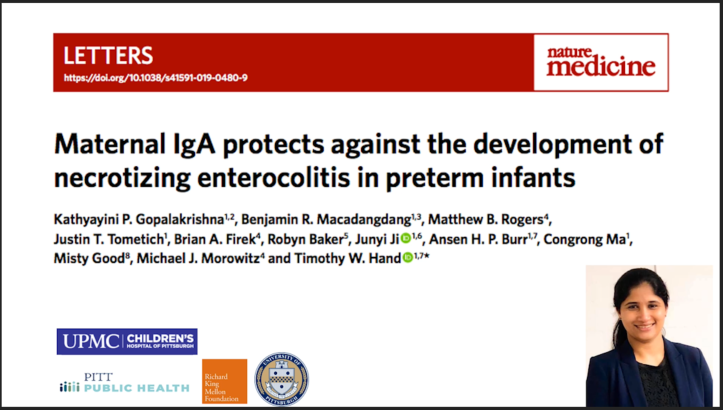

I am a physician-scientist studying host–microbe interactions and microbial pathogenesis during early life.
I currently serve as a Project Scientist at the University of California, Riverside, where I investigate immune responses to intestinal microbes relevant to neonatal host defense and vaccine development.
Previously, I conducted postdoctoral research at the California Institute of Technology and UPMC Children’s Hospital of Pittsburgh.
I received my PhD in Human Genetics from the University of Pittsburgh.
